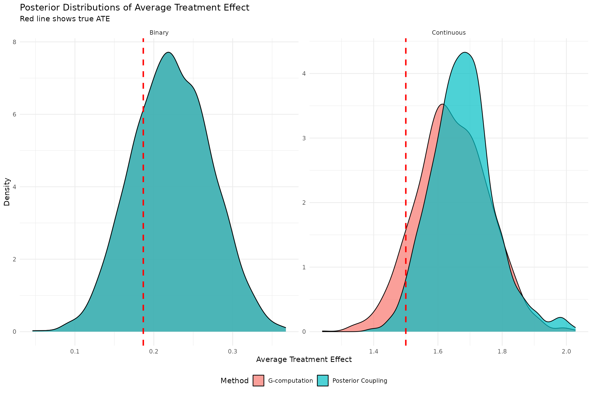
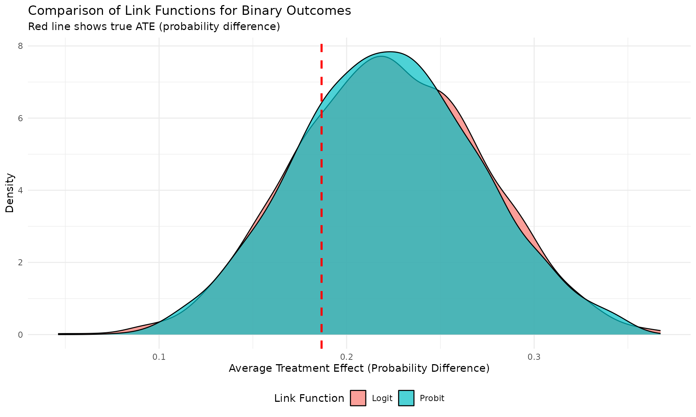
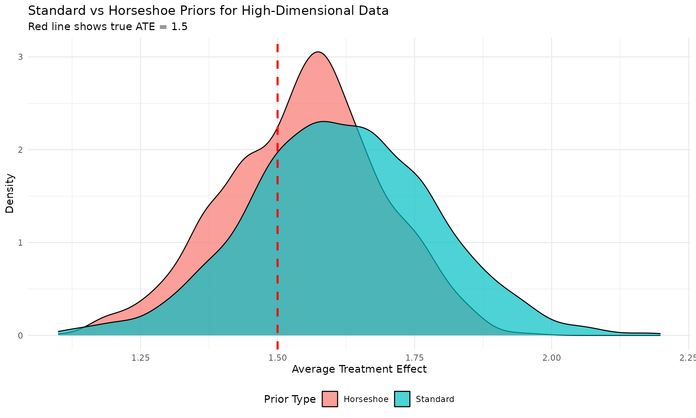
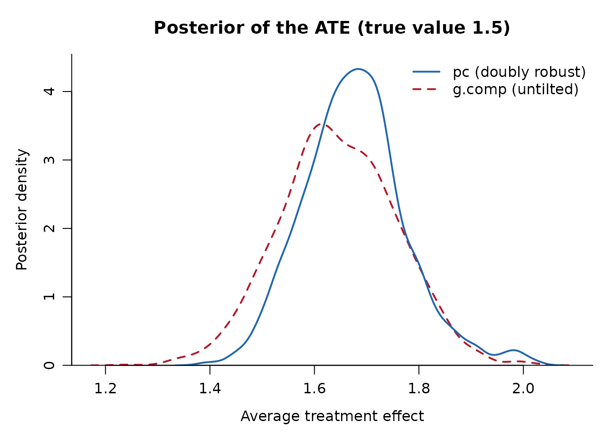
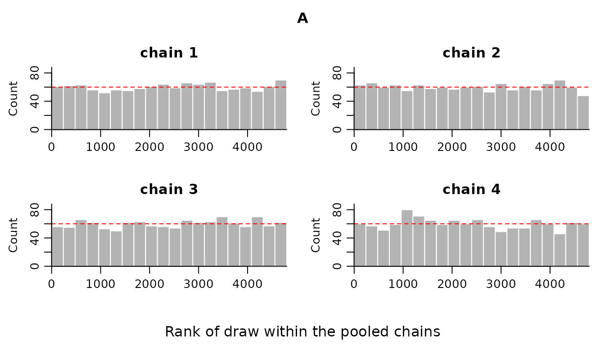

Getting Started with DRBayes
Tomotaka Momozaki
2026-09-16
Source:vignettes/getting-started.Rmd
getting-started.RmdIntroduction
The DRBayes package implements Bayesian doubly robust causal inference methods via posterior coupling. This approach combines the robustness of doubly robust estimation with the uncertainty quantification benefits of Bayesian inference, providing a principled framework for causal effect estimation.
Key Features
-
Formula Interface: Intuitive R formula syntax
compatible with
lm(),glm(), and other standard functions - Doubly robust estimation: Consistent estimation even when either the outcome model or propensity score model is misspecified
- Bayesian uncertainty quantification: Full posterior distributions for treatment effects
- Posterior coupling: Novel methodology that avoids the feedback problem in traditional doubly robust methods
- Multiple outcome types: Support for both continuous (linear regression) and binary outcomes (logistic/probit regression)
- Automatic detection: Smart detection of outcome family and link functions based on data
- Flexible modeling: Built-in functions with standard and horseshoe priors plus support for external Bayesian software
Basic Concepts
Doubly Robust Estimation
Doubly robust (DR) estimation combines two models:
- Outcome model: \(E[Y|A,X] = \mu(A,X)\) - models the relationship between outcome and covariates
- Propensity score model: \(P(A=1|X) = \pi(X)\) - models the treatment assignment mechanism
The key property is that DR estimators remain consistent if either model is correctly specified, providing robustness against model misspecification.
Outcome Types and Model Families
DRBayes supports different outcome types through the
family and link parameters:
Posterior Coupling Approach
A Bayesian doubly robust estimator has to get propensity score information into the analysis somehow, and the two obvious ways both cost something. Putting the propensity score in the outcome likelihood lets outcome information flow back into the propensity score, which is the feedback problem: the estimated score can stop adjusting for confounding. Estimating the score first and conditioning on it afterwards, cutting feedback, avoids that but no longer produces a posterior distribution in the ordinary sense.
Posterior coupling takes a third route. The two models are fitted independently, so neither contaminates the other, and the propensity score information enters afterwards by entropic tilting: the joint posterior is reweighted, as little as it can be in Kullback-Leibler terms, until the doubly robust moment condition holds in posterior expectation. The result is an explicit posterior distribution.
That is what the two sets of draws a fit returns are:
-
g.compis the untilted Bayesian g-formula posterior. It uses the outcome model alone. If the outcome model is right, this is already a valid posterior for the average treatment effect, and it is what you would get without any of the machinery below. -
pcis the same quantity after tilting. The tilt is governed by a single number,lambda, found by the sweep. Atlambda = 0the two are the same set of draws.
Lemma 1 of the paper says that when the outcome model is correctly
specified the tilting is not needed: the moment condition is already
satisfied in expectation, so lambda is near zero and
pc is close to g.comp. Theorem 1 says that
when the outcome model is wrong but the propensity score model
is right, the posterior mean of pc is still consistent,
which g.comp is not. The two agreeing is therefore not a
sign that nothing happened; it is what a well specified outcome model
looks like.
Example 1: Continuous Outcomes
Data Setup
Let’s start with a continuous outcome example using simulated data:
# Set seed for reproducibility
set.seed(1234)
# Sample size
n <- 400
# Create a data frame with all variables
data <- data.frame(
X1 = rnorm(n),
X2 = rnorm(n),
X3 = rbinom(n, 1, 0.5),
X4 = rnorm(n) # Additional covariate
)
# True propensity score (treatment assignment mechanism)
ps_true <- plogis(0.2 + 0.5*data$X1 - 0.3*data$X2 + 0.4*data$X3)
data$A <- rbinom(n, 1, ps_true)
# True outcome model with treatment effect (CONTINUOUS)
# ATE = 1.5 (main effect) + interaction effects
data$Y <- 1 + 1.5*data$A + 0.8*data$X1 + 0.6*data$X2 + 0.4*data$X3 + 0.3*data$A*data$X1 + rnorm(n, 0, 1)
# Calculate true ATE (accounting for interactions)
# E[Y|A=1,X] - E[Y|A=0,X] = 1.5 + 0.3*E[X1] = 1.5 (since E[X1] = 0)
true_ate_continuous <- 1.5
cat("True ATE (continuous):", round(true_ate_continuous, 3), "\n")
#> True ATE (continuous): 1.5
cat("Sample statistics:\n")
#> Sample statistics:
cat(" Treatment group mean:", round(mean(data$Y[data$A==1]), 3), "\n")
#> Treatment group mean: 2.979
cat(" Control group mean:", round(mean(data$Y[data$A==0]), 3), "\n")
#> Control group mean: 0.873
cat(" Observed difference:", round(mean(data$Y[data$A==1]) - mean(data$Y[data$A==0]), 3), "\n")
#> Observed difference: 2.106
cat(" Sample size:", nrow(data), "\n")
#> Sample size: 400
cat(" Treatment prevalence:", round(mean(data$A), 3), "\n")
#> Treatment prevalence: 0.588Fitting the Model with Formula Interface
# Fit the model using the formula interface
result_continuous <- drbayes_pc(
outcome.formula = Y ~ A + X1 + X2 + X3 + A:X1, # Outcome model with interaction
ps.formula = A ~ X1 + X2 + X3, # Propensity score model
data = data,
family = "gaussian", # For continuous outcomes
link = "identity", # Identity link (default)
outcome.model = bayes_lm, # Bayesian linear regression
ps.model = bayes_logit, # Bayesian logistic regression
mc = 1200, # MCMC iterations
bn = 300, # Burn-in
thin = 2, # Thinning
outcome.priors = list(
theta_prior = 1/100, # Prior precision for regression coefficients
sigma_prior = c(1, 1) # Inverse-gamma prior for error variance
),
ps.priors = list(
theta_prior = 1/100 # Prior precision for logistic regression
)
)
cat("Continuous outcome model fitting completed!\n")
#> Continuous outcome model fitting completed!
cat("Number of posterior samples:", length(result_continuous$g.comp), "\n")
#> Number of posterior samples: 1800
cat("Model family:", result_continuous$family, "\n")
#> Model family: gaussian
cat("Link function:", result_continuous$link, "\n")
#> Link function: identityAutomatic Family Detection
# DRBayes can automatically detect the outcome type
result_auto_continuous <- drbayes_pc(
outcome.formula = Y ~ A + X1 + X2 + X3 + A:X1,
ps.formula = A ~ X1 + X2 + X3,
data = data,
# family and link not specified - will be auto-detected
outcome.model = bayes_lm,
ps.model = bayes_logit,
mc = 1200, bn = 300, thin = 2
)
cat("Auto-detected family:", result_auto_continuous$family, "\n")
#> Auto-detected family: gaussian
cat("Auto-detected link:", result_auto_continuous$link, "\n")
#> Auto-detected link: identity
cat("Auto-detected ATE:", round(mean(result_auto_continuous$pc), 3), "\n")
#> Auto-detected ATE: 1.676Example 2: Binary Outcomes
Data Setup (Binary)
Now let’s create a binary outcome example:
# Create new data for binary outcome
set.seed(5678)
n <- 400
data_binary <- data.frame(
X1 = rnorm(n),
X2 = rnorm(n),
X3 = rbinom(n, 1, 0.5)
)
# Treatment assignment (same mechanism)
ps_true_bin <- plogis(0.2 + 0.5*data_binary$X1 - 0.3*data_binary$X2 + 0.4*data_binary$X3)
data_binary$A <- rbinom(n, 1, ps_true_bin)
# Binary outcome using logistic model
linear_predictor <- -0.5 + 0.8*data_binary$A + 0.4*data_binary$X1 + 0.3*data_binary$X2 + 0.2*data_binary$X3
prob_success <- plogis(linear_predictor)
data_binary$Y <- rbinom(n, 1, prob_success)
# Calculate true ATE for binary outcome (probability difference)
# Create counterfactual outcomes
prob_treated <- plogis(-0.5 + 0.8*1 + 0.4*data_binary$X1 + 0.3*data_binary$X2 + 0.2*data_binary$X3)
prob_control <- plogis(-0.5 + 0.8*0 + 0.4*data_binary$X1 + 0.3*data_binary$X2 + 0.2*data_binary$X3)
true_ate_binary <- mean(prob_treated - prob_control)
cat("True ATE (binary, probability difference):", round(true_ate_binary, 3), "\n")
#> True ATE (binary, probability difference): 0.187
cat("Sample statistics:\n")
#> Sample statistics:
cat(" Treatment group success rate:", round(mean(data_binary$Y[data_binary$A==1]), 3), "\n")
#> Treatment group success rate: 0.653
cat(" Control group success rate:", round(mean(data_binary$Y[data_binary$A==0]), 3), "\n")
#> Control group success rate: 0.402
cat(" Observed difference:", round(mean(data_binary$Y[data_binary$A==1]) - mean(data_binary$Y[data_binary$A==0]), 3), "\n")
#> Observed difference: 0.25Fitting Binary Outcome Models
# Fit logistic model - will be auto-detected
result_binary_auto <- drbayes_pc(
outcome.formula = Y ~ A + X1 + X2 + X3,
ps.formula = A ~ X1 + X2 + X3,
data = data_binary,
# Auto-detection: all Y values are 0/1, so binomial family with logit link
outcome.model = bayes_logit,
ps.model = bayes_logit,
mc = 1200, bn = 300, thin = 2
)
cat("Auto-detected family:", result_binary_auto$family, "\n")
#> Auto-detected family: binomial
cat("Auto-detected link:", result_binary_auto$link, "\n")
#> Auto-detected link: logit
# Fit with explicit specification
result_binary_logit <- drbayes_pc(
outcome.formula = Y ~ A + X1 + X2 + X3,
ps.formula = A ~ X1 + X2 + X3,
data = data_binary,
family = "binomial",
link = "logit",
outcome.model = bayes_logit,
ps.model = bayes_logit,
mc = 1200, bn = 300, thin = 2
)
# Fit with probit link
result_binary_probit <- drbayes_pc(
outcome.formula = Y ~ A + X1 + X2 + X3,
ps.formula = A ~ X1 + X2 + X3,
data = data_binary,
family = "binomial",
link = "probit",
outcome.model = bayes_probit,
ps.model = bayes_logit,
mc = 1200, bn = 300, thin = 2
)
cat("Binary outcome models completed!\n")
#> Binary outcome models completed!Advanced Formula Usage
Complex Transformations and Interactions
# Generate more complex data
set.seed(9999)
n <- 500
data_advanced <- data.frame(
X1 = rnorm(n, 2, 0.5), # Mean-shifted for log transformation
X2 = rnorm(n),
X3 = rnorm(n),
X4 = runif(n, 0, 5) # Uniform for polynomial
)
# Treatment assignment
ps_adv <- plogis(0.1 + 0.3*data_advanced$X1 + 0.2*data_advanced$X2^2 + 0.1*data_advanced$X3*data_advanced$X4)
data_advanced$A <- rbinom(n, 1, ps_adv)
# Complex outcome with non-linear relationships
data_advanced$Y <- 2 + 1.2*data_advanced$A +
0.5*log(data_advanced$X1) +
0.3*data_advanced$X2^2 +
0.4*data_advanced$X3 +
0.2*data_advanced$X4^2 +
0.6*data_advanced$A*data_advanced$X1 +
rnorm(n, 0, 0.8)
# Fit with complex formulas
result_advanced <- drbayes_pc(
outcome.formula = Y ~ A + log(X1) + I(X2^2) + X3 + poly(X4, 2) + A:X1,
ps.formula = A ~ X1 + X2 + X3 + I(X2^2) + X3:X4,
data = data_advanced,
family = "gaussian",
outcome.model = bayes_lm,
ps.model = bayes_logit,
mc = 1200, bn = 300, thin = 2
)
cat("Advanced formula model completed!\n")
#> Advanced formula model completed!
cat("ATE estimate:", round(mean(result_advanced$pc), 3), "\n")
#> ATE estimate: 2.544Missing Data Handling
# Create data with missing values
data_missing <- data
missing_indices_x1 <- sample(1:length(data_missing$Y), 30)
missing_indices_x2 <- sample(1:length(data_missing$Y), 25)
data_missing$X1[missing_indices_x1] <- NA
data_missing$X2[missing_indices_x2] <- NA
cat("Original sample size:", length(data_missing$Y), "\n")
#> Original sample size: 400
cat("Missing values in X1:", length(missing_indices_x1), "\n")
#> Missing values in X1: 30
cat("Missing values in X2:", length(missing_indices_x2), "\n")
#> Missing values in X2: 25
# Fit model with missing data using na.omit
result_missing <- drbayes_pc(
outcome.formula = Y ~ A + X1 + X2 + X3,
ps.formula = A ~ X1 + X2 + X3,
data = data_missing,
na.action = "na.omit",
outcome.model = bayes_lm,
ps.model = bayes_logit,
mc = 1200, bn = 300, thin = 2
)
cat("After handling missing data:\n")
#> After handling missing data:
cat("Analysis sample size:", result_missing$data_info$n_observations, "\n")
#> Analysis sample size: 346
cat("Excluded observations:", result_missing$data_info$missing_observations, "\n")
#> Excluded observations: 54
cat("ATE with complete cases:", round(mean(result_missing$pc), 3), "\n")
#> ATE with complete cases: 1.578High-Dimensional Data with Horseshoe Priors
# Generate high-dimensional data
set.seed(2025)
n_hd <- 300
p_hd <- 50 # Many covariates
# Create high-dimensional data frame
data_hd <- as.data.frame(matrix(rnorm(n_hd * p_hd), n_hd, p_hd))
names(data_hd) <- paste0("X", 1:p_hd)
# Only first few covariates are truly relevant
data_hd$A <- rbinom(n_hd, 1, plogis(
1.0*data_hd$X1 + 1.0*data_hd$X2 - 1.0*data_hd$X3 + 1.0*data_hd$X4
))
# Outcome depends on only a few variables (sparse)
data_hd$Y <- 2 + 1.5*data_hd$A +
1.0*data_hd$X1 + 1.0*data_hd$X2 + 1.0*data_hd$X3 +
1.0*data_hd$A*data_hd$X1 +
rnorm(n_hd, 0, 1)
# Create explicit formulas for high-dimensional data
# Get all covariate names (excluding A and Y)
covariate_names <- setdiff(names(data_hd), c("A", "Y"))
outcome_formula_hd <- as.formula(paste("Y ~ A +", paste(covariate_names, collapse = " + ")))
ps_formula_hd <- as.formula(paste("A ~", paste(covariate_names, collapse = " + ")))
# Standard priors (might overfit)
result_standard <- drbayes_pc(
outcome.formula = outcome_formula_hd, # Include all covariates
ps.formula = ps_formula_hd, # All covariates except A and Y
data = data_hd,
outcome.model = bayes_lm,
ps.model = bayes_logit,
mc = 1200, bn = 300, thin = 2
)
# Horseshoe priors for regularization
result_horseshoe <- drbayes_pc(
outcome.formula = outcome_formula_hd,
ps.formula = ps_formula_hd,
data = data_hd,
outcome.model = bayes_lm_hs, # Horseshoe linear regression
ps.model = bayes_logit_hs, # Horseshoe logistic regression
mc = 1200, bn = 300, thin = 2
)
cat("High-dimensional results:\n")
#> High-dimensional results:
cat("True ATE: 1.5\n")
#> True ATE: 1.5
cat("Standard priors ATE:", round(mean(result_standard$pc), 3), "\n")
#> Standard priors ATE: 1.617
cat("Horseshoe priors ATE:", round(mean(result_horseshoe$pc), 3), "\n")
#> Horseshoe priors ATE: 1.547
cat("Standard priors SD:", round(sd(result_standard$pc), 3), "\n")
#> Standard priors SD: 0.169
cat("Horseshoe priors SD:", round(sd(result_horseshoe$pc), 3), "\n")
#> Horseshoe priors SD: 0.143Results and Interpretation
Summary Statistics
# Create summary function
summarize_results <- function(samples, method_name, true_value = NULL, outcome_type = "continuous") {
cat("\n", method_name, ":\n")
cat(" Mean:", round(mean(samples), 3), "\n")
cat(" SD:", round(sd(samples), 3), "\n")
cat(" 95% CI: [", round(quantile(samples, 0.025), 3), ",",
round(quantile(samples, 0.975), 3), "]\n")
if (!is.null(true_value)) {
bias <- mean(samples) - true_value
cat(" Bias:", round(bias, 3), "\n")
coverage <- (true_value >= quantile(samples, 0.025)) &
(true_value <= quantile(samples, 0.975))
cat(" 95% CI Coverage:", coverage, "\n")
}
if (outcome_type == "binary") {
cat(" Interpretation: Treatment increases success probability by",
round(mean(samples), 3), "on average\n")
}
}
# Summarize continuous outcome results
cat("=== CONTINUOUS OUTCOME RESULTS ===")
#> === CONTINUOUS OUTCOME RESULTS ===
summarize_results(result_continuous$g.comp, "G-computation", true_ate_continuous)
#>
#> G-computation :
#> Mean: 1.645
#> SD: 0.112
#> 95% CI: [ 1.431 , 1.859 ]
#> Bias: 0.145
#> 95% CI Coverage: TRUE
summarize_results(result_continuous$pc, "Posterior Coupling", true_ate_continuous)
#>
#> Posterior Coupling :
#> Mean: 1.677
#> SD: 0.098
#> 95% CI: [ 1.499 , 1.903 ]
#> Bias: 0.177
#> 95% CI Coverage: TRUE
# Summarize binary outcome results
cat("\n=== BINARY OUTCOME RESULTS ===")
#>
#> === BINARY OUTCOME RESULTS ===
summarize_results(result_binary_logit$g.comp, "G-computation (Logit)", true_ate_binary, "binary")
#>
#> G-computation (Logit) :
#> Mean: 0.223
#> SD: 0.05
#> 95% CI: [ 0.128 , 0.319 ]
#> Bias: 0.036
#> 95% CI Coverage: TRUE
#> Interpretation: Treatment increases success probability by 0.223 on average
summarize_results(result_binary_logit$pc, "Posterior Coupling (Logit)", true_ate_binary, "binary")
#>
#> Posterior Coupling (Logit) :
#> Mean: 0.223
#> SD: 0.05
#> 95% CI: [ 0.128 , 0.319 ]
#> Bias: 0.036
#> 95% CI Coverage: TRUE
#> Interpretation: Treatment increases success probability by 0.223 on average
summarize_results(result_binary_probit$pc, "Posterior Coupling (Probit)", true_ate_binary, "binary")
#>
#> Posterior Coupling (Probit) :
#> Mean: 0.222
#> SD: 0.049
#> 95% CI: [ 0.128 , 0.32 ]
#> Bias: 0.036
#> 95% CI Coverage: TRUE
#> Interpretation: Treatment increases success probability by 0.222 on averagePosterior Distributions
# Create data frame for plotting. Each label has to repeat once per draw, not
# once per group, or the four sets of draws are interleaved into one another.
draws <- list(result_continuous$g.comp, result_continuous$pc,
result_binary_logit$g.comp, result_binary_logit$pc)
n_draws <- lengths(draws)
plot_data <- data.frame(
ATE = unlist(draws),
Method = rep(c("G-computation", "Posterior Coupling",
"G-computation", "Posterior Coupling"), times = n_draws),
Outcome_Type = rep(c("Continuous", "Continuous", "Binary", "Binary"),
times = n_draws)
)
# Create faceted density plot
p1 <- ggplot(plot_data, aes(x = ATE, fill = Method)) +
geom_density(alpha = 0.7) +
geom_vline(data = data.frame(
Outcome_Type = c("Continuous", "Binary"),
true_ate = c(true_ate_continuous, true_ate_binary)
), aes(xintercept = true_ate), linetype = "dashed",
color = "red", linewidth = 1) +
facet_wrap(~ Outcome_Type, scales = "free") +
labs(
title = "Posterior Distributions of Average Treatment Effect",
subtitle = "Red line shows true ATE",
x = "Average Treatment Effect",
y = "Density",
fill = "Method"
) +
theme_minimal() +
theme(legend.position = "bottom")
print(p1)
Link Function Comparison (Binary Outcomes)
# Compare logit vs probit for binary outcomes
link_data <- data.frame(
ATE = c(result_binary_logit$pc, result_binary_probit$pc),
Link = rep(c("Logit", "Probit"), each = length(result_binary_logit$pc))
)
p2 <- ggplot(link_data, aes(x = ATE, fill = Link)) +
geom_density(alpha = 0.7) +
geom_vline(xintercept = true_ate_binary, linetype = "dashed",
color = "red", linewidth = 1) +
labs(
title = "Comparison of Link Functions for Binary Outcomes",
subtitle = "Red line shows true ATE (probability difference)",
x = "Average Treatment Effect (Probability Difference)",
y = "Density",
fill = "Link Function"
) +
theme_minimal() +
theme(legend.position = "bottom")
print(p2)
Horseshoe vs Standard Priors
# Compare standard vs horseshoe priors for high-dimensional data
horseshoe_data <- data.frame(
ATE = c(result_standard$pc, result_horseshoe$pc),
Prior = rep(c("Standard", "Horseshoe"), each = length(result_standard$pc))
)
p3 <- ggplot(horseshoe_data, aes(x = ATE, fill = Prior)) +
geom_density(alpha = 0.7) +
geom_vline(xintercept = 1.5, linetype = "dashed",
color = "red", linewidth = 1) +
labs(
title = "Standard vs Horseshoe Priors for High-Dimensional Data",
subtitle = "Red line shows true ATE = 1.5",
x = "Average Treatment Effect",
y = "Density",
fill = "Prior Type"
) +
theme_minimal() +
theme(legend.position = "bottom")
print(p3)
Convergence Diagnostics
Two different things need checking, and only one of them is an MCMC question.
The outcome and propensity score models are fitted
by Markov chain Monte Carlo, so R-hat and effective sample size apply to
their coefficients. drbayes_pc() computes them before the
sequential Monte Carlo sweep, because posterior coupling is only as
trustworthy as the worse of the two posteriors, and returns the table in
$diagnostics.
head(result_continuous$diagnostics)
#> model parameter mean sd rhat ess_bulk ess_tail
#> 1 outcome (Intercept) 0.9455931 0.09509899 1.0007788 1744.551 1649.950
#> 2 outcome A 1.6431822 0.11142007 1.0028341 1838.232 1708.814
#> 3 outcome X1 0.8384571 0.09177170 0.9991016 1748.387 1633.266
#> 4 outcome X2 0.6313758 0.05302254 1.0005410 1774.558 1671.412
#> 5 outcome X3 0.3748920 0.10272254 0.9996299 1813.035 1837.535
#> 6 outcome A:X1 0.2979509 0.11485260 1.0001207 1715.109 1672.937
#> mcse_mean
#> 1 0.002276716
#> 2 0.002597107
#> 3 0.002191486
#> 4 0.001260668
#> 5 0.002414927
#> 6 0.002771594
cat("Worst R-hat:", round(max(result_continuous$diagnostics$rhat), 4), "\n")
#> Worst R-hat: 1.0028
cat("Smallest bulk ESS:",
round(min(result_continuous$diagnostics$ess_bulk)), "\n")
#> Smallest bulk ESS: 1451The coupling step is diagnosed by $smc:
the tilting parameter it settled on, the posterior mean of the moment
condition it achieved, the tolerance that was compared against, and
whether the two met.
str(result_continuous$smc)
#> List of 10
#> $ lambda : num -3.51
#> $ B_mean : num 0.000906
#> $ B_mean_weighted: num NA
#> $ tol : num 0.00266
#> $ n_steps : int 351
#> $ max_steps : int 1000
#> $ converged : logi TRUE
#> $ ess : num NA
#> $ n_ancestors_min: int 1100
#> $ n_distinct : int NAprint() puts both summaries next to the treatment
effect.
print(result_continuous)
#> Bayesian doubly robust causal inference via posterior coupling
#>
#> Call:
#> drbayes_pc(outcome.formula = Y ~ A + X1 + X2 + X3 + A:X1, ps.formula = A ~
#> X1 + X2 + X3, data = data, family = "gaussian", link = "identity",
#> mc = 1200, bn = 300, thin = 2, outcome.model = bayes_lm,
#> ps.model = bayes_logit, outcome.priors = list(theta_prior = 1/100,
#> sigma_prior = c(1, 1)), ps.priors = list(theta_prior = 1/100))
#>
#> Outcome model: gaussian family, identity link
#> Propensity score: logit link
#> Observations: 400 (235 treated, 165 control)
#> Posterior draws: 1800
#>
#> Average treatment effect
#> mean 2.5% 97.5%
#> pc 1.677 1.499 1.903
#> g.comp 1.645 1.431 1.859
#>
#> Report pc, the doubly robust estimand. g.comp is the untilted g-formula
#> posterior, which relies on the outcome model alone.
#>
#> Both are posteriors for the average causal effect over the 400 covariate
#> vectors observed, which is what equation (3.7) averages. See ?drbayes_pc on
#> when that differs from the average over the population they were drawn from.
#>
#> Posterior coupling: lambda = -3.51, moment condition met, |mean B_n| = 0.000906
#> below the tolerance 0.00266, after 351 of 1000 steps.
#>
#> Convergence diagnostics (worst over both models)
#> Largest R-hat: 1.003 (outcome: A)
#> Smallest ESS: 1451 (propensity score: X3)The draws in $pc and $g.comp are
not a Markov chain. They are sequential Monte Carlo
particles: they are resampled at every step of the sweep, so their order
carries no information. A trace plot of them, or an effective sample
size computed from their autocorrelation, would be estimating nothing.
Plot their densities instead.
plot(result_continuous,
main = paste0("Posterior of the ATE (true value ",
true_ate_continuous, ")"))
Where a rank plot is wanted, it belongs to the MCMC draws, which the
samplers return directly. rank_plot() takes the iterations
by chains by parameters array they produce; under convergence every
chain contributes equally to every rank interval, so the bars sit near
the dashed line.
X_outcome <- model.matrix(Y ~ A + X1 + X2 + X3 + A:X1, data)[, -1]
draws_outcome <- bayes_lm(data$Y, X_outcome, mc = 1200, chains = 4)
rank_plot(draws_outcome, parameter = "A")
Model Comparison
Comparison with Classical Methods
# ===== CONTINUOUS OUTCOME COMPARISON =====
# Simple regression adjustment
lm_model <- lm(Y ~ A + X1 + X2 + X3 + A:X1, data = data)
reg_adj_ate_cont <- coef(lm_model)["A"]
# Inverse probability weighting
ps_model <- glm(A ~ X1 + X2 + X3, family = binomial, data = data)
ps_hat <- predict(ps_model, type = "response")
ipw_ate_cont <- mean(data$Y * data$A / ps_hat) - mean(data$Y * (1-data$A) / (1 - ps_hat))
# ===== BINARY OUTCOME COMPARISON =====
# Logistic regression adjustment
glm_model <- glm(Y ~ A + X1 + X2 + X3, family = binomial, data = data_binary)
newdata_1 <- newdata_0 <- data_binary[c("A", "X1", "X2", "X3")]
newdata_1$A <- 1
newdata_0$A <- 0
prob1_hat <- predict(glm_model, newdata = newdata_1, type = "response")
prob0_hat <- predict(glm_model, newdata = newdata_0, type = "response")
reg_adj_ate_bin <- mean(prob1_hat - prob0_hat)
# IPW for binary outcome (using same PS model structure)
ps_model_bin <- glm(A ~ X1 + X2 + X3, family = binomial, data = data_binary)
ps_hat_bin <- predict(ps_model_bin, type = "response")
ipw_ate_bin <- mean(data_binary$Y * data_binary$A / ps_hat_bin) -
mean(data_binary$Y * (1-data_binary$A) / (1 - ps_hat_bin))
# Create comparison tables
comparison_continuous <- data.frame(
Method = c("True ATE", "Regression Adjustment", "IPW",
"DR (Bayesian, G-comp)", "DR (Bayesian, PC)"),
Estimate = c(true_ate_continuous, reg_adj_ate_cont, ipw_ate_cont,
mean(result_continuous$g.comp), mean(result_continuous$pc)),
SE_or_SD = c(NA, summary(lm_model)$coefficients["A", "Std. Error"],
NA, sd(result_continuous$g.comp), sd(result_continuous$pc))
)
comparison_binary <- data.frame(
Method = c("True ATE", "Regression Adjustment", "IPW",
"DR (Bayesian, G-comp)", "DR (Bayesian, PC)"),
Estimate = c(true_ate_binary, reg_adj_ate_bin, ipw_ate_bin,
mean(result_binary_logit$g.comp), mean(result_binary_logit$pc)),
SE_or_SD = c(NA, NA, NA,
sd(result_binary_logit$g.comp), sd(result_binary_logit$pc))
)
# Round numeric columns
comparison_continuous[, c("Estimate", "SE_or_SD")] <- round(comparison_continuous[, c("Estimate", "SE_or_SD")], 3)
comparison_binary[, c("Estimate", "SE_or_SD")] <- round(comparison_binary[, c("Estimate", "SE_or_SD")], 3)
cat("=== CONTINUOUS OUTCOME COMPARISON ===\n")
#> === CONTINUOUS OUTCOME COMPARISON ===
print(comparison_continuous)
#> Method Estimate SE_or_SD
#> 1 True ATE 1.500 NA
#> 2 Regression Adjustment 1.647 0.112
#> 3 IPW 1.730 NA
#> 4 DR (Bayesian, G-comp) 1.645 0.112
#> 5 DR (Bayesian, PC) 1.677 0.098
cat("\n=== BINARY OUTCOME COMPARISON ===\n")
#>
#> === BINARY OUTCOME COMPARISON ===
print(comparison_binary)
#> Method Estimate SE_or_SD
#> 1 True ATE 0.187 NA
#> 2 Regression Adjustment 0.223 NA
#> 3 IPW 0.243 NA
#> 4 DR (Bayesian, G-comp) 0.223 0.05
#> 5 DR (Bayesian, PC) 0.223 0.05Practical Considerations
Formula Specification Guidelines
Writing formulas in DRBayes is like telling the software how you think your data works. Here’s a practical guide to help you build effective models.
Step-by-Step Approach to Building Your Outcome Model
Step 1: Start Simple
# Always include the treatment variable A - this is essential!
outcome.formula = Y ~ A + X1 + X2 + X3- What this does: Models Y as depending on treatment A plus your main confounders
- When to use: This should be your starting point for any analysis
- Think of it as: “My outcome depends on treatment plus the main factors I care about”
Step 2: Add Treatment Interactions (if relevant)
# Add interactions when treatment effects might vary by patient characteristics
outcome.formula = Y ~ A + X1 + X2 + X3 + A:X1- What this does: Allows the treatment effect to be different for different values of X1
- When to use: When you suspect treatment works better/worse for certain groups
- Real example: “Blood pressure medication might work differently for older vs younger patients”
- Interpretation: If A:X1 coefficient is positive, treatment is more effective when X1 is higher
Step 3: Handle Non-Linear Relationships (when needed)
# Use transformations when relationships aren't straight lines
outcome.formula = Y ~ A + log(X1) + I(X2^2) + X3 + A:X1
# Or use polynomials for smooth curves
outcome.formula = Y ~ A + X1 + poly(X2, 2) + X3 + A:X1- log(X1): Use when X1 has diminishing returns (e.g., income effects)
- I(X2^2): Use when you expect U-shaped or inverted-U relationships (e.g., age effects)
- poly(X2, 2): Similar to X2^2 but mathematically more stable
- Warning: Don’t use log() with zero or negative values!
Step 4: Advanced Specifications (use carefully)
# Only when you have strong reasons and enough data
outcome.formula = Y ~ A + X1 + X2 + X3 + A:X1 + A:X2 + I(X1^2) + X1:X2- When to use: Large datasets (n > 500) with clear theoretical justification
- Risk: Overfitting - your model might work well on your data but poorly on new data
Building Your Propensity Score Model
The propensity score model predicts who gets treatment. Think: “What factors influenced the treatment decision?”
Start Here:
# Include all variables that affect BOTH treatment assignment AND outcome
ps.formula = A ~ X1 + X2 + X3- Key principle: Include confounders (variables affecting both treatment and outcome)
- Don’t include: Pure predictors of outcome that don’t affect treatment assignment
- Don’t include: The outcome variable Y itself
Add Complexity When Needed:
# Non-linear relationships in treatment assignment
ps.formula = A ~ X1 + X2 + X3 + I(X1^2) + X1:X2- When to use: When treatment assignment has complex patterns
- Example: “Doctors might prescribe more aggressively for moderate-risk patients but less for very high-risk patients”
High-Dimensional Data:
# Include many variables (use with horseshoe priors)
ps.formula = A ~ . # All variables except A and Y- When to use: Rich datasets with many potential confounders
- Requirement: Must use regularized priors (bayes_logit_hs, bayes_probit_hs)
- Example: Electronic health records with hundreds of variables
Quick Decision Guide
“Should I include this variable in my model?”
For Outcome Model: - ✅ Always include: Treatment variable A - ✅ Usually include: Strong predictors of outcome - ✅ Consider including: Variables that modify treatment effects - ❌ Don’t include: Variables measured after treatment
For Propensity Score Model: - ✅ Always include: Confounders (affect both treatment and outcome) - ✅ Usually include: Variables that predict treatment assignment - ❌ Never include: The outcome variable itself
“Should I add interactions/transformations?” - ✅ Yes, if: You have theoretical reasons and sufficient sample size - ✅ Yes, if: Diagnostic plots suggest non-linear relationships - ❌ No, if: Your sample size is small (n < 200) - ❌ No, if: You’re just ``fishing’’ without theoretical justification
Common Mistakes to Avoid
- Forgetting the treatment variable: Always include A in your outcome formula
- Including post-treatment variables: Don’t include variables measured after treatment
- Over-complicating with small samples: Keep it simple with n < 500
- Ignoring domain knowledge: Use subject-matter expertise, not just statistical significance
MCMC Recommendations
- MCMC iterations: At least 2000 after burn-in for stable inference
- Burn-in: Typically 20-25% of total iterations (e.g., 1000 out of 4000)
-
Thinning: Use
thin = 2orthin = 3to reduce autocorrelation - High-dimensional data: May require more iterations and stronger priors
Missing Data Considerations
# Different missing data strategies
cat("Missing data handling options:\n")
#> Missing data handling options:
cat('na.action = "na.omit" # Remove rows with any missing values (default)\n')
#> na.action = "na.omit" # Remove rows with any missing values (default)
cat('na.action = "na.fail" # Stop if any missing values found\n')
#> na.action = "na.fail" # Stop if any missing values found
cat('na.action = "na.exclude" # Similar to na.omit but preserves attributes\n')
#> na.action = "na.exclude" # Similar to na.omit but preserves attributes
# Check data completeness before analysis
cat("\nData completeness check:\n")
#>
#> Data completeness check:
cat("Complete cases in original data:", sum(complete.cases(data)), "out of", nrow(data), "\n")
#> Complete cases in original data: 400 out of 400
cat("Complete cases in missing data:", sum(complete.cases(data_missing)), "out of", nrow(data_missing), "\n")
#> Complete cases in missing data: 346 out of 400Troubleshooting Common Issues
# Check for extreme values
cat("Posterior diagnostics:\n")
#> Posterior diagnostics:
cat("Continuous outcome range:", round(range(result_continuous$pc), 3), "\n")
#> Continuous outcome range: 1.388 2.023
cat("Binary outcome range:", round(range(result_binary_logit$pc), 3), "\n")
#> Binary outcome range: 0.046 0.367
# Check for reasonable credible intervals
continuous_ci <- quantile(result_continuous$pc, c(0.025, 0.975))
binary_ci <- quantile(result_binary_logit$pc, c(0.025, 0.975))
cat("95% CI width (continuous):", round(diff(continuous_ci), 3), "\n")
#> 95% CI width (continuous): 0.404
cat("95% CI width (binary):", round(diff(binary_ci), 3), "\n")
#> 95% CI width (binary): 0.191
# Was the moment condition actually solved? When it was not, the pc draws
# carry no double robustness guarantee and the fit should not be reported.
fits <- list(continuous = result_continuous, binary = result_binary_logit)
for (nm in names(fits)) {
smc <- fits[[nm]]$smc
cat(nm, ": lambda =", round(smc$lambda, 3),
"| |mean B_n| =", signif(abs(smc$B_mean), 3),
"| tolerance =", signif(smc$tol, 3),
"| converged =", smc$converged, "\n")
}
#> continuous : lambda = -3.51 | |mean B_n| = 0.000906 | tolerance = 0.00266 | converged = TRUE
#> binary : lambda = 0 | |mean B_n| = 0.000496 | tolerance = 0.00118 | converged = TRUEWhich average the interval is for
Both g.comp and pc are posteriors for
equation (3.7): the average of the fitted contrast over the
covariate vectors that were observed. Section 2.1 of the paper
defines the estimand as \(\tau = E[Y_1 -
Y_0]\), an average over the population those vectors came from.
The two are different quantities, and it is worth knowing which one a
credible interval belongs to.
They are the same number when the fitted contrast \(c_i = m_1(X_i) - m_0(X_i)\) does not vary from unit to unit, and they part company when it does. Averaging over the observed covariates treats their distribution as known, so the interval does not carry the uncertainty of not knowing it; putting Dirichlet weights on the observations, which is what a Bayesian bootstrap does, adds exactly \(\mathrm{Var}_i(c_i)/n\) to the posterior variance and leaves the posterior mean alone.
Two things make the contrast vary: a treatment interaction, and a link that is not the identity. Only the first is large enough to notice.
fit_hetero <- drbayes_pc(
Y ~ A + X1 + X2 + X3 + A:X1, A ~ X1 + X2 + X3, data,
outcome.model = bayes_lm, ps.model = bayes_logit,
control = drbayes_control(mc = 2000, bn = 500, keep_particles = TRUE),
diagnostics = "none")
contrast <- with(fit_hetero$particles,
tcrossprod(outcome, Z.lm1) - tcrossprod(outcome, Z.lm0))
n_obs <- fit_hetero$data_info$n_observations
observed <- rowMeans(contrast) # equation (3.7)
added <- mean(apply(contrast, 1, var)) / n_obs # what the weights add
widen <- sqrt(1 + added / var(observed))
cat("interval for the observed covariates:", round(diff(quantile(observed,
c(0.025, 0.975))), 4), "\n")
#> interval for the observed covariates: 0.3075
cat("wider by a factor of:", round(widen, 3), "\n")
#> wider by a factor of: 1.017How large the factor is depends on how much the effect actually
varies. The interaction in this example is mild –
0.4 * A * X1 against a treatment effect of 1.5 – and the
factor comes out near 1.02. On a unit level effect of
2 + 1.5 * X1 it is about 1.11 at n = 500 and 1.21 at n =
2000.
Without an interaction, and with an identity link, it is exactly 1: every unit has the same contrast, so it makes no difference how the units are weighted. With a logit or probit link and no interaction it is about 1.001, which is to say that the link does make the contrast vary, but nowhere near enough to matter against the posterior uncertainty.
None of this touches the point estimate or the double robustness of Theorem 1. Dirichlet weights average to \(1/n\), so the posterior mean is unchanged, and the theorem is a statement about that mean. What changes is the width of the interval, and which estimand it is an interval for.
When the sweep does not converge
converged = FALSE means the sweep ran out of tilting
parameter without driving the moment condition below the tolerance. The
pc draws it returns are still draws from a tilted
posterior, but not one that satisfies the constraint, so Theorem 1 does
not apply to them and they should not be reported as doubly robust.
Raising mc does not help. The sweep searches over
lambda on a grid bounded by lambda_max, and
how many posterior draws that grid is evaluated on does not change where
the moment condition can be met. What to try instead, roughly in order
of how often it is the answer:
-
Widen the search.
drbayes_control(lambda_max = 20)doubles the range. A large fittedlambdaat the boundary is the signature of a tilt that wants to go further than it was allowed. -
Look at the propensity score. A moment condition
that cannot be satisfied usually means the weights are being dominated
by a handful of observations.
range(fitted(glm(ps.formula, binomial, data)))close to 0 or 1 says so directly, and the fit will refuse outright if it reaches either. -
Use the subclassification moment.
drbayes_control(moment = "subclass")replaces the individual inverse score weights of equation (3.4) with the treated fraction of a propensity score stratum, which is far less sensitive to a single extreme score. Note that this is a different moment condition, not a numerical variant of the same one: Lemma 1 is a statement about equation (3.4), and the tilt that satisfies one condition is not the tilt that satisfies the other.lambdais therefore not comparable between the two settings. On one correctly specified fit used while writing this, with n = 800, equation (F.2) was already satisfied atlambda = 0while equation (3.4) neededlambda = -2.7; which of the two asks for more tilting is a property of the data, not something to read as one being better behaved. -
Take fewer, larger steps. The Liu-West kernel
smooths the particles at every step, and hundreds of steps will pull a
heavy-tailed posterior towards a normal one.
drbayes_control(n_steps = 200)is the usual remedy when the outcome prior is a horseshoe.
Alternative: Bayesian Bootstrap Method
# Compare with the Bayesian Bootstrap approach. It takes the same formula
# interface as drbayes_pc, so the interaction is written as A:X1 and the
# counterfactual predictions recompute it.
result_bb <- drbayes_bb(
outcome.formula = Y ~ A + X1 + X2 + X3 + A:X1,
ps.formula = A ~ X1 + X2 + X3,
data = data,
num_iterations = 300,
family = "gaussian",
verbose = FALSE
)
cat("Bayesian Bootstrap ATE:", round(mean(result_bb), 3), "\n")
#> Bayesian Bootstrap ATE: 1.675
cat("Bayesian Bootstrap SD:", round(sd(result_bb), 3), "\n")
#> Bayesian Bootstrap SD: 0.106
cat("95% CI: [", round(quantile(result_bb, c(0.025, 0.975)), 3), "]\n")
#> 95% CI: [ 1.457 1.878 ]
# Compare all methods
cat("\nMethod Comparison (Continuous Outcome):\n")
#>
#> Method Comparison (Continuous Outcome):
cat("True ATE:", round(true_ate_continuous, 3), "\n")
#> True ATE: 1.5
cat("Posterior Coupling:", round(mean(result_continuous$pc), 3), "\n")
#> Posterior Coupling: 1.677
cat("G-computation:", round(mean(result_continuous$g.comp), 3), "\n")
#> G-computation: 1.645
cat("Bayesian Bootstrap:", round(mean(result_bb), 3), "\n")
#> Bayesian Bootstrap: 1.675Conclusion
The DRBayes package with its formula interface provides a powerful and intuitive framework for Bayesian doubly robust causal inference. Key advantages include:
Methodological Advantages
- Robustness: Consistent estimation under model misspecification
-
Uncertainty quantification: Full posterior
distributions for treatment effects
- Outcome flexibility: Support for both continuous and binary outcomes with multiple link functions
- Regularization: Horseshoe priors for high-dimensional data
- Software integration: Works with built-in models or external Bayesian software
Practical Recommendations
- Start simple: Use basic formulas and automatic detection
- Check diagnostics: Monitor convergence and effective sample sizes
- Use appropriate priors: Horseshoe priors for high-dimensional data
-
Handle missing data: Choose appropriate
na.actionstrategy - Compare methods: Use both posterior coupling and g-computation for robustness
For integration with external Bayesian software (Stan, JAGS, brms), see the additional vignettes.
Session Information
sessionInfo()
#> R version 4.6.1 (2026-06-24)
#> Platform: x86_64-pc-linux-gnu
#> Running under: Ubuntu 24.04.5 LTS
#>
#> Matrix products: default
#> BLAS: /usr/lib/x86_64-linux-gnu/openblas-pthread/libblas.so.3
#> LAPACK: /usr/lib/x86_64-linux-gnu/openblas-pthread/libopenblasp-r0.3.26.so; LAPACK version 3.12.0
#>
#> locale:
#> [1] LC_CTYPE=C.UTF-8 LC_NUMERIC=C LC_TIME=C.UTF-8
#> [4] LC_COLLATE=C.UTF-8 LC_MONETARY=C.UTF-8 LC_MESSAGES=C.UTF-8
#> [7] LC_PAPER=C.UTF-8 LC_NAME=C LC_ADDRESS=C
#> [10] LC_TELEPHONE=C LC_MEASUREMENT=C.UTF-8 LC_IDENTIFICATION=C
#>
#> time zone: UTC
#> tzcode source: system (glibc)
#>
#> attached base packages:
#> [1] stats graphics grDevices utils datasets methods base
#>
#> other attached packages:
#> [1] ggplot2_4.0.3 DRBayes_0.1.1
#>
#> loaded via a namespace (and not attached):
#> [1] gtable_0.3.6 jsonlite_2.0.0 RcppTN_0.2-2
#> [4] dplyr_1.2.1 compiler_4.6.1 tidyselect_1.2.1
#> [7] Rcpp_1.1.2 parallel_4.6.1 jquerylib_0.1.4
#> [10] globals_0.19.1 systemfonts_1.3.2 scales_1.4.0
#> [13] textshaping_1.0.5 yaml_2.3.12 fastmap_1.2.0
#> [16] R6_2.6.1 labeling_0.4.3 generics_0.1.4
#> [19] knitr_1.52 pgdraw_1.1 future_1.75.0
#> [22] tibble_3.3.1 desc_1.4.3 bslib_0.12.0
#> [25] pillar_1.11.1 RColorBrewer_1.1-3 rlang_1.3.0
#> [28] cachem_1.1.0 xfun_0.60 fs_2.1.0
#> [31] sass_0.4.10 S7_0.2.2 otel_0.2.0
#> [34] cli_3.6.6 withr_3.0.3 extraDistr_1.10.0.5
#> [37] pkgdown_2.2.1 magrittr_2.0.5 digest_0.6.39
#> [40] grid_4.6.1 mvtnorm_1.4-2 lifecycle_1.0.5
#> [43] vctrs_0.7.3 evaluate_1.0.5 glue_1.8.1
#> [46] listenv_1.0.0 furrr_0.4.0 farver_2.1.2
#> [49] codetools_0.2-20 ragg_1.5.2 parallelly_1.48.0
#> [52] purrr_1.2.2 rmarkdown_2.32 tools_4.6.1
#> [55] pkgconfig_2.0.3 htmltools_0.5.9